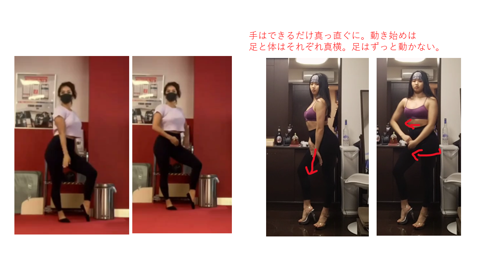
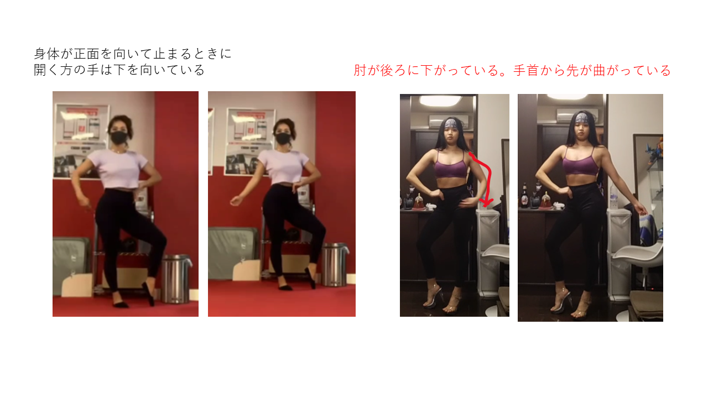

20220313
自分で考えたルーティンを録画
ぱっと見の課題
ウォーキング
・一歩踏み出す度に大きく弾まないようにする
・肩を開いて胸を張って骨盤を並行にして歩く ※骨盤が普段から若干前傾気味なので
・手の振りをもう少し大きく
バックステップ
・軸足の方の骨盤があがっている。バックステップの時は並行にする
オープン
・ウォーキングから右オープンに入るときに左足->右足の順に着地する
・ウォーキングから入るときに手を外から遠心力にあわせて回すと綺麗
・手の動きが雑い

追記：上半身それほど回転してないかも。ほぼ前向いてて手だけきれいに動いてる感じ。バック2->振り返りのときの遠心力でやるとうまくいった

バック1
・ウォーキングから静止したときに姿勢をただす。肩を開いて胸をはる。手はげんこつ1個分あける。足はそのまま置くとXになるので膝を外に向ける
・右肩が下がりがち。身体の軸を真っ直ぐにする
髪のかきあげ
・クッションしたら尻～身体も「真横に」むけて膝に置く方の手はしっかり垂らす
・軸足と反対の足はオープンのときのようにかかとを上げる
・身体を真横に向けて振り返ってから動作をはじめる。視線は斜め後ろ下。
バック2
・手を動かすときに「変身」みたいになっている。一回力を抜いて手をまっすぐ垂らしてから上げ始める。頂上ではがっちり握らなくていいかも(むしろ肩リアと広背筋のコントロールを意識すべき)
・力を抜いて肘を伸ばして上げていく
・止まっている時間が短い。3秒とまってから振り返りの動作に入る
その他
・全体的に「クッション」のときの尻の動き具合が小さい